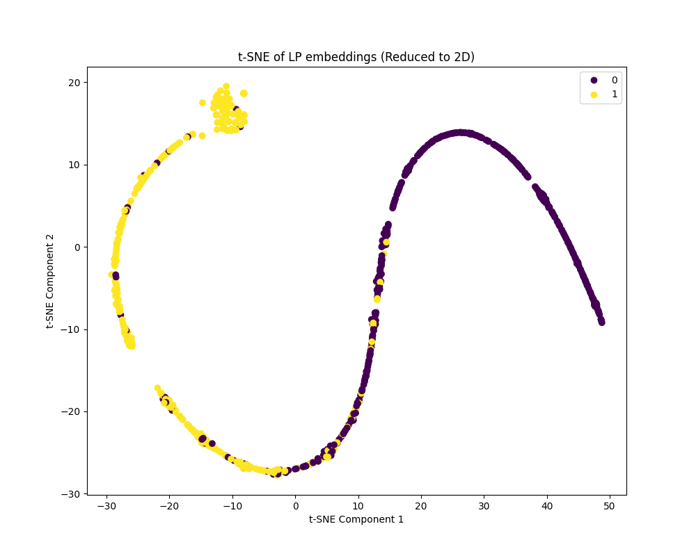
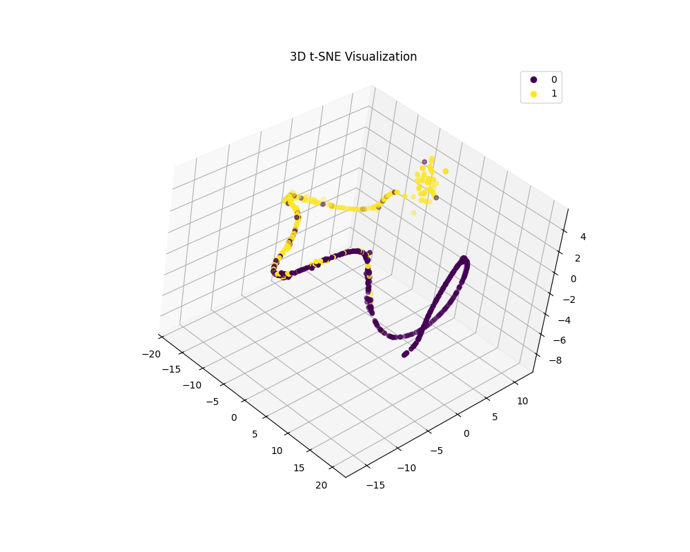

R&D proof-of-concept — RiverLogic Value Chain Optimization (VCO) software
Solving a linear programming (LP) problem to determine it's infeasible can itself be expensive. This proof-of-concept explores whether a small graph neural network can pre-screen an LP problem's feasibility cheaply, before committing to a full solve — a lightweight gate in front of RiverLogic's VCO solver pipeline.
We proposed estimating LP feasibility using a graph convolutional neural network (GCNN). Representing an LP problem as a bipartite graph is a scientifically grounded approach (arXiv:2012.13349, arXiv:2302.05636), and using that graph representation to make general approximate estimations about the problem is likewise supported by recent literature (Qian et al., 2024). The conversion from matrix representation to bipartite graph (and back) is straightforward, and production-ready GCNN implementations already exist in PyTorch Geometric.
No dataset of customer models was available for this demo, so synthetic ones were generated instead:
~5,000 LP problems for the training set and ~2,000 for the test set, keeping a 50/50 split between
feasible and infeasible instances. Since this was supervised learning, ground-truth
feasible/infeasible labels were produced by actually solving each generated problem with SciPy's
linprog(). Production use would call for a representative dataset of real customer
models and a production-grade LP solver.
Even in this first, crude pass, the trained model reached ~92% accuracy — with room to improve given more time for research and experimentation. More telling than the accuracy number alone: projecting the model's learned embeddings with t-SNE shows feasible and infeasible LP instances separating into distinct clusters, which is clear evidence the GCNN can actually tell feasible from infeasible LPs rather than just fitting the synthetic labels (some outliers remain and would need further investigation). Pre-solve feasibility estimation via a GCNN this small turned out to be a solvable task.
In our experience, a full solve of VCO (Value Chain Optimization) models through production LP solvers can take several hours — the matrix representations these models present to LP solvers are considerable. A pre-solve check this cheap could save customers substantial time and compute by flagging an infeasible or crudely broken model upfront, before committing to a full solve.


The experimental model structure, for reference (further research/tuning would follow in a production track):
import torch
from torch.nn import Linear
import torch.nn.functional as F
from torch_geometric.nn import GCNConv
from torch_geometric.nn import global_mean_pool, global_add_pool
class GCN(torch.nn.Module):
def __init__(self, num_node_features, hidden_channels, num_classes):
super(GCN, self).__init__()
self.conv1 = GCNConv(num_node_features, hidden_channels)
self.conv2 = GCNConv(hidden_channels, hidden_channels)
self.conv3 = GCNConv(hidden_channels, hidden_channels)
self.conv4 = GCNConv(hidden_channels, hidden_channels)
self.lin = Linear(hidden_channels, num_classes)
def forward(self, x, edge_index, edge_weight, batch):
# 1. Obtain node embeddings
x = self.conv1(x, edge_index, edge_weight)
x = x.relu()
x = self.conv2(x, edge_index, edge_weight)
x = x.relu()
x = self.conv3(x, edge_index, edge_weight)
x = x.relu()
x = self.conv4(x, edge_index, edge_weight)
x = x.relu()
# 2. Readout layer
x = global_mean_pool(x, batch) # [batch_size, hidden_channels]
# 3. Apply a final classifier
x = F.dropout(x, p=0.5, training=self.training)
x = self.lin(x)
return xOr the model's own print() representation, whichever is more readable — note how
small it is for the result it delivers:
GCN(
(conv1): GCNConv(4, 16)
(conv2): GCNConv(16, 16)
(conv3): GCNConv(16, 16)
(conv4): GCNConv(16, 16)
(lin): Linear(in_features=16, out_features=2, bias=True)
)